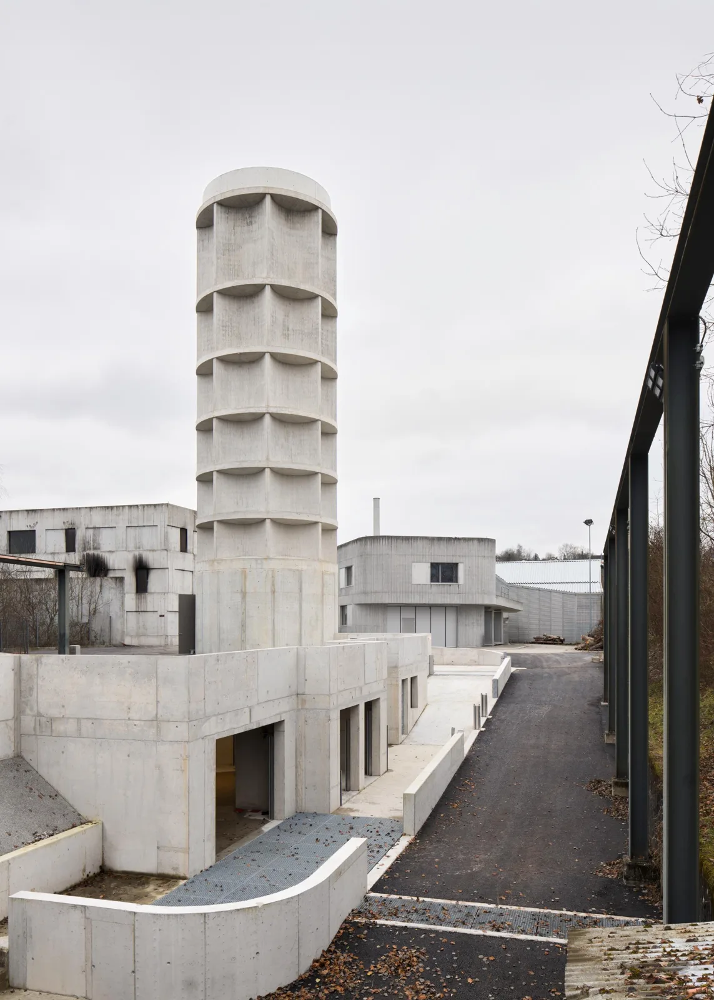
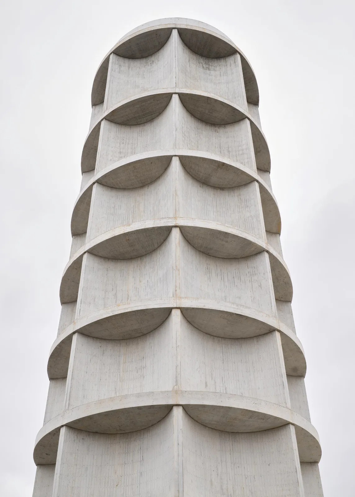
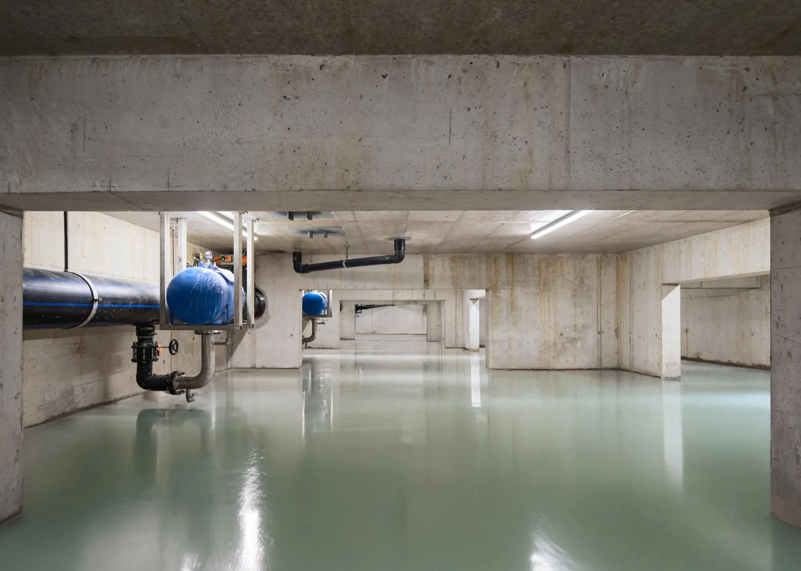
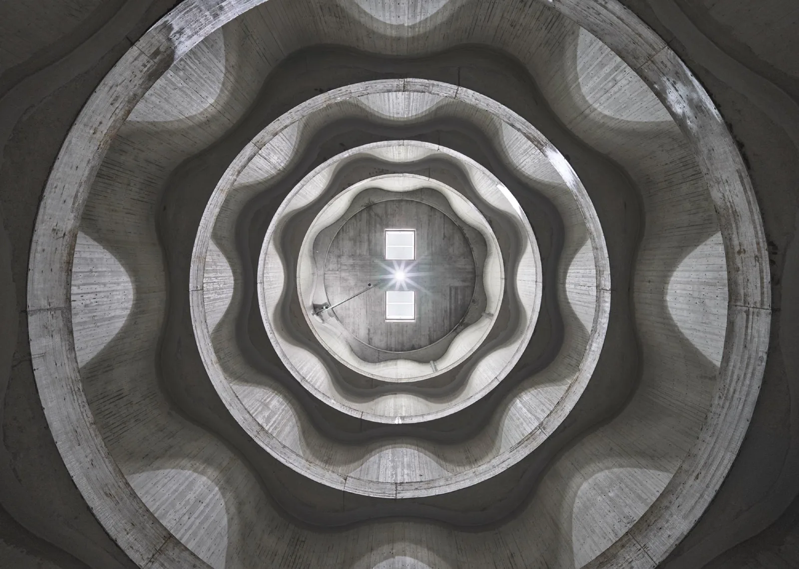
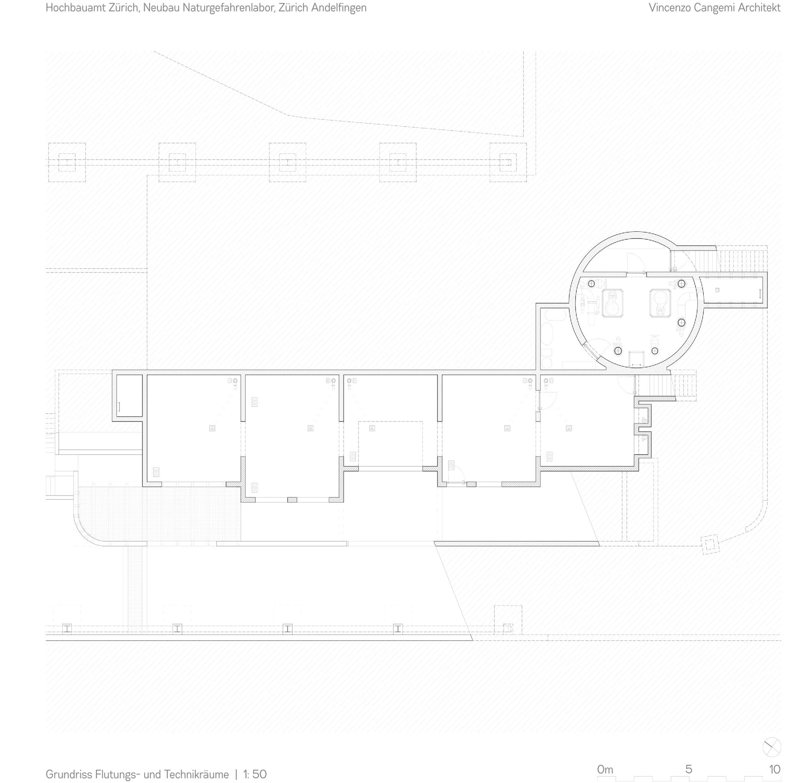
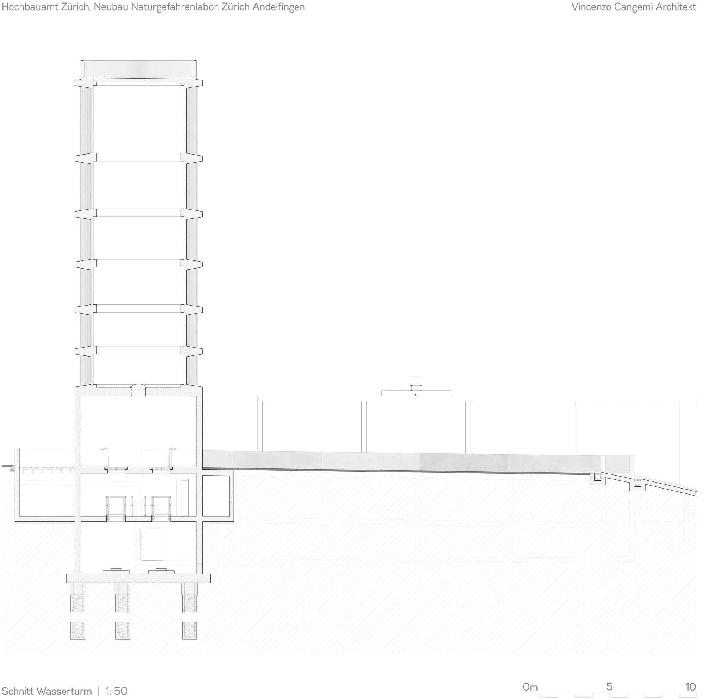
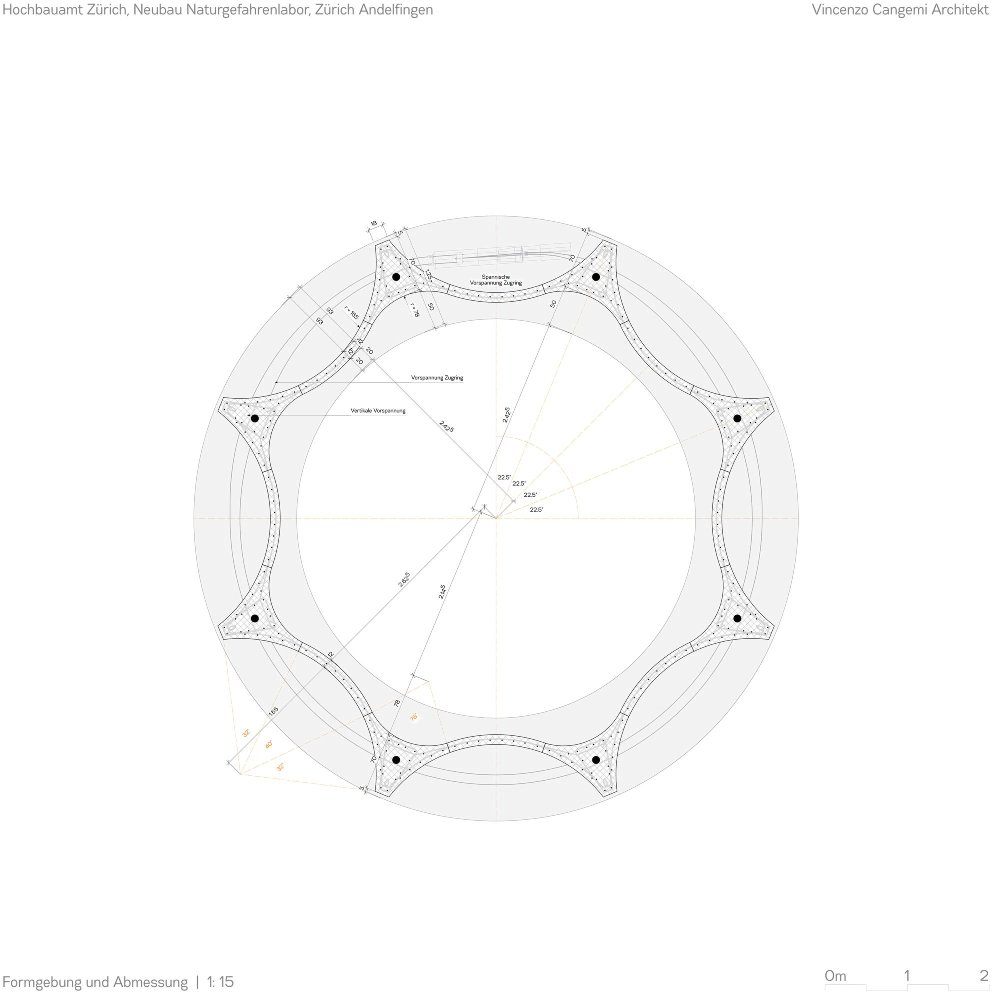

Flood simulation and training facility · 2024
Natural Disaster Simulation Training Centre
Cangemi Architekten
Andelfingen, Switzerland
The centre recreates flooding so trainees can learn about water hazards in realistic conditions. Indoor rooms support static flooding, while an external ramp and road allow moving-water scenarios and demonstrations.
The tower's concave concrete walls behave as a series of small dams, restrained by six concrete belts. Stored water provides the flow for training, then collects in a retention tank and is pumped back to the tower, allowing repeated exercises with the same water.


Relevant connections
THINK
Trainees develop an understanding of flood hazards through realistic scenarios.
SHOW
Controlled flooding makes water behaviour and emergency situations demonstrable at full scale.
Images and drawings / 07











